What do you think of when you hear "Cancún"? It's not a secret that Mexico's Caribbean coast is an amazing tropical vacation spot. That being said, there is much more to the area than the resorts.Here are the best areas around the Yucatán.
Cancún
It's famous for its beaches and resorts, however I ended up staying a few minutes bus ride away in the actual city center as it's significantly cheaper. The city center is nothing special, but the beaches are of course stunning.
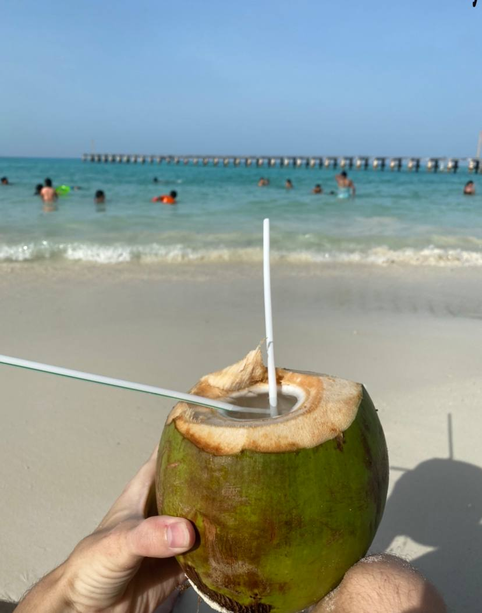
My favorite beaches to go to in the Zona Hotelera (Hotel Zone) are Playa Caracol and Playa Delfines. Playa Caracol is great for swimming as it avoids the seaweed problem plaguing a lot of Cancún beaches and has no waves, and a couple tide pools around. It also has perfect powdery white sand (like flour!) and a classic turquiose blue color.Playa Delfines doesn't avoid the seaweed problem, but has an incredible deep blue color and since it recieves most of the swell, you can actually surf here! You can find various surfboard rentals along the beach. Otherwise if you don-t mind a bit of seaweed, it's a nice place to swim and relax on the sand.
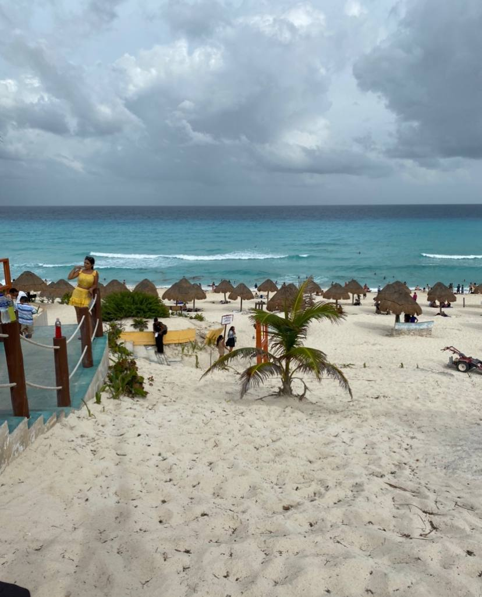
The best beaches in Cancún? Without a doubt the best can be found on Isla Mujeres, the small island about 30 minutes from the Zona Hotelera. You can take a ferry from the ports to get there. On the island is an amazing Cuban style colonial town, golf carts instead of cars, and ridiculously beautiful beaches.
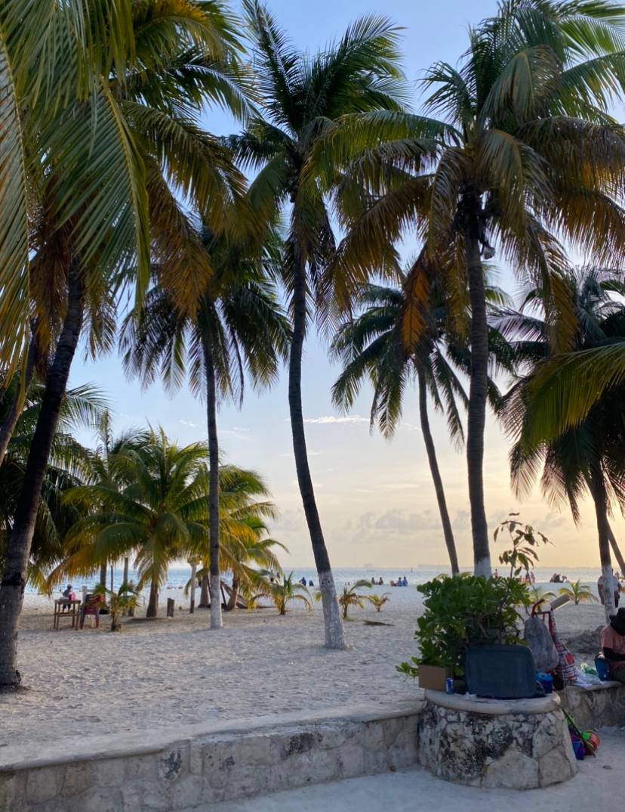
You will arrive at the town center, right next to Playa Centro, a fairly large and fantastic beach with views of the Zona Hotelera. On the other end of the island you will find Parque Garrafon de Catilla, you have to pay a small fee to enter this tiny beach but it makes up for it in INSANELY turquise blue water, a large coral reef, and tons of fish. Get off the sand and spend time snorkeling in the reef!
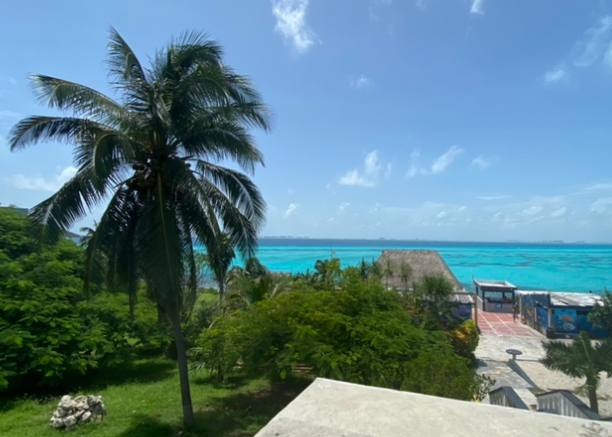
If you want to get off the sand and really get in the ocean, Isla mujeres has great diving with many reef dives and an underwater museum (MUSA). You can also pay to go snorkeling with whale sharks when they migrate near the island! Isla Mujeres was the star of Cancún and if I could do it again, I would probably exclusively stay on the island.
Playa Del Carmen
This beach town is quite different from Cancún, instead of the town and resorts being seperate, the town is right on the beach. The town itself unlike Cancún is actually quite nice, with nice buildings, walkable streets with lots of restaurants and shops, and lots of great hostels. However, the beach is not nearly as impressive.
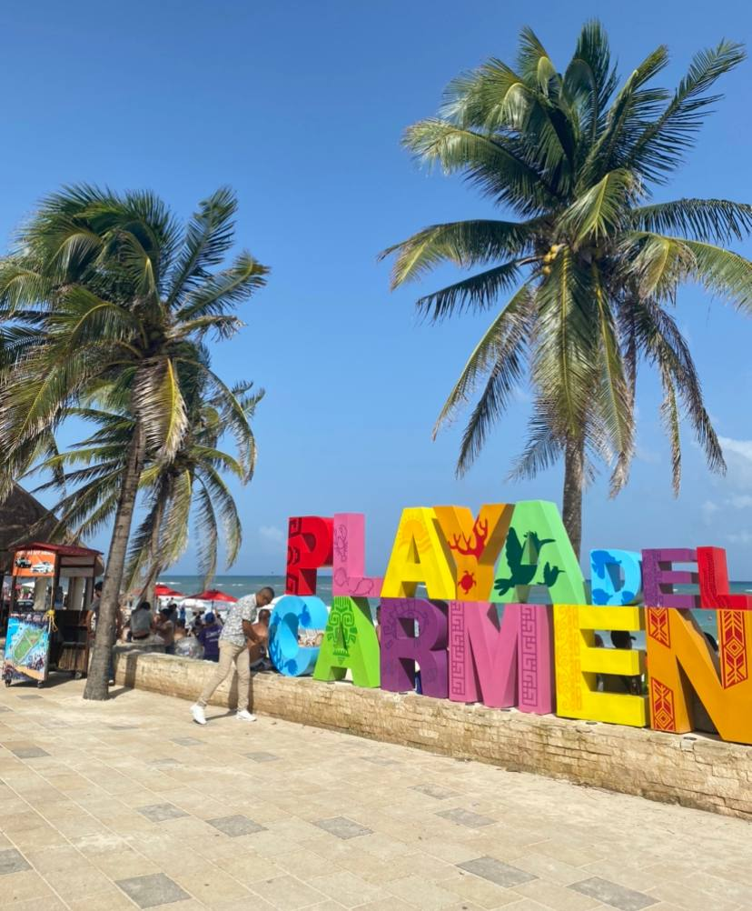
The water is blue, but not that beautiful, the reef is quite close to the beach though which can make some small but fun waves for paddleboarding/paddlesurfing.
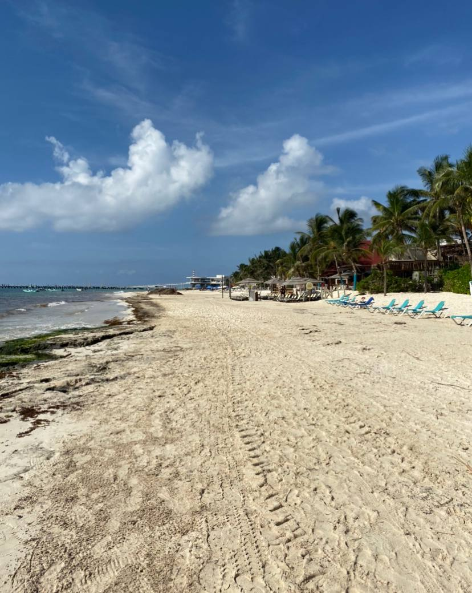
It's a nice town with a decent beach and some things to do, but does get boring after a few days, I would honestly probably skip it for a vacation.
Tulum
I had big expectations for this place, I always wanted to go. The Caribbean sea alongside Mayan pyramids, cenotes, nature inspired artwork, it seemed incredible. But I was dissapointed when I arrived. The town center is lackluster and very far from the beach and hotel zone, its very expensive, and the beach itself was a big letdown.
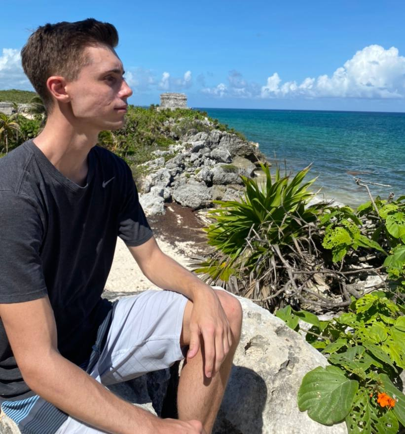
The ruins weren't bad, I enjoyed walking around there, but not that big or impressive. (Although I did like feeding the iguanas that roam around the area!) However the beach alongside was unimpressive, I didn't even go for a swim, the water was barely blue (brown near the shore, although the seaweed may have just been particularly bad when I was there) and the beach itself had an unfriendly feel to it, lots of vendors and influencers, not much else.
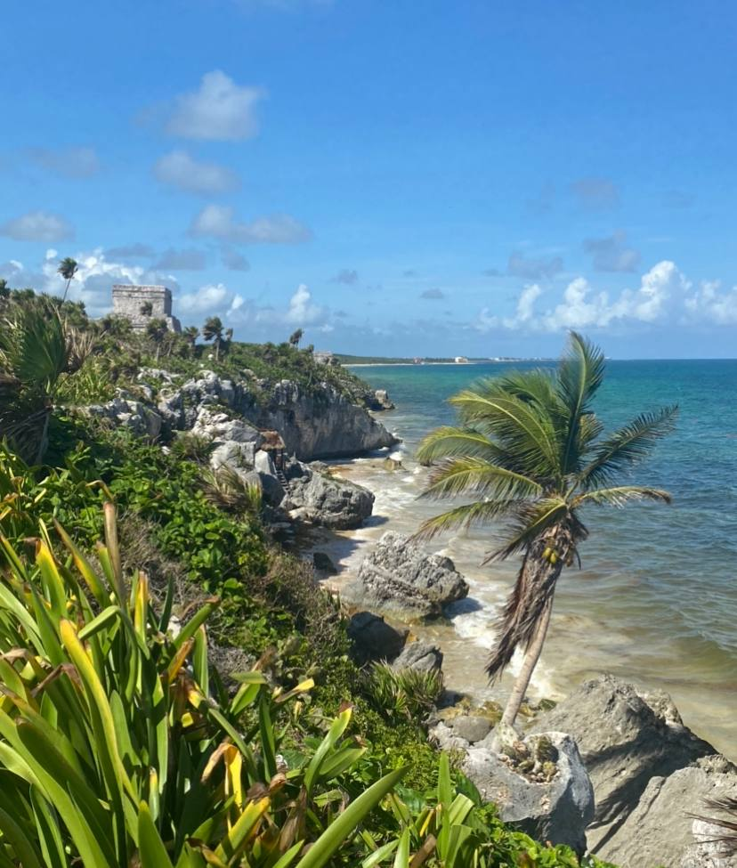
The hotel zone itself was dissapointing as well, overpriced hotels and restaurants, massive lines, and felt fake. That being said it's still worth it to go to Tulum if you're going to see the cenotes! A cenote is basically a sinkhole filled with water, like a natural swimming pool and tends to have cool, crystal clear water, and some wildlife (fish, bats, turtles).
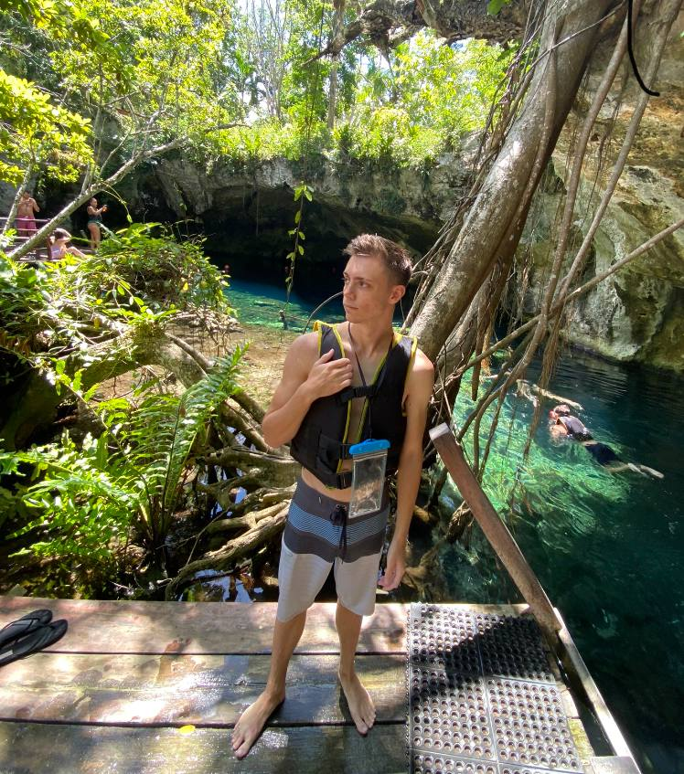
There are a whole bunch of cenotes near Tulum and it makes for a good stop to explore them, although you can take tours from anywhere in the Rivera Maya. All of them were impressive, stunning, and freezing cold! I didn't even make it to the more famous ones like Dos Ojos but it made the trip to Tulum worth it.
Chichén Itzá
Getting a few hours away from the beaches, Chichén Itzá is a large and well preserved Mayan pyramid in the middle of the Yucatán Peninsula. It's deemed one of the wonders of the ancient world and a must see, and I'd have to agree! It's well worth a trip here, the pyramid is seriously impressive.
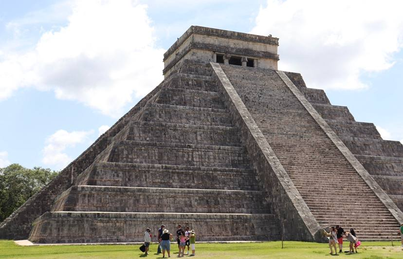
You can arrive on your own or through a tour, I usually like to do it on my own but I recommend a tour in this case. As a tour covers several hours of transportation from the beach towns, food, entrance, a tour to the nearby colonial town of Vallodolid, and a tour of the nearby cenotes!
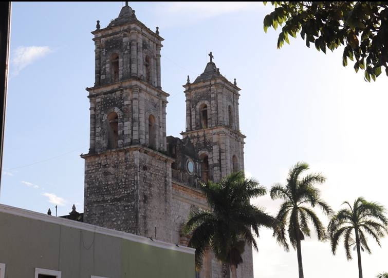
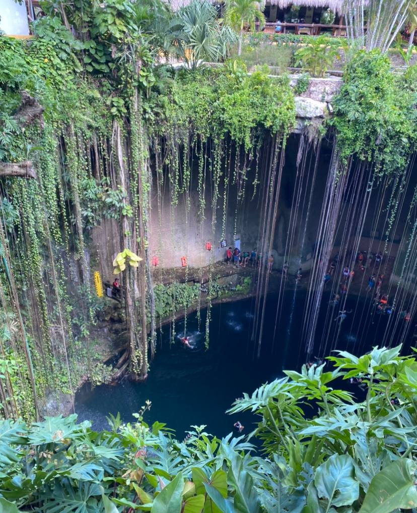
You will have to wait for a while to get in, and make your way past some markets and vendors, but then you have tons of wide open space to walk around and see the ruins. It can get seriously hot here and there is no shade, but it's well worth it, the main pyramid is quite large and well preserved, and makes for incredible photos. Alongside the pyramid, you can see the rest of the temples, buildings, and famous ball court from the ancient Mayan city.Once you have had enough of the heat, make your way to one of the nearby cenotes to cool off! The cenotes around this area are quite big compared to the majority around Tulum and made the day that much better.
Leave a Comment
{% for comment in comments %}
By {{ comment.name }} on {{ comment.date_created }}

Leave a Comment
By {{ comment.name }} on {{ comment.date_created }}
{{ comment.comment }}